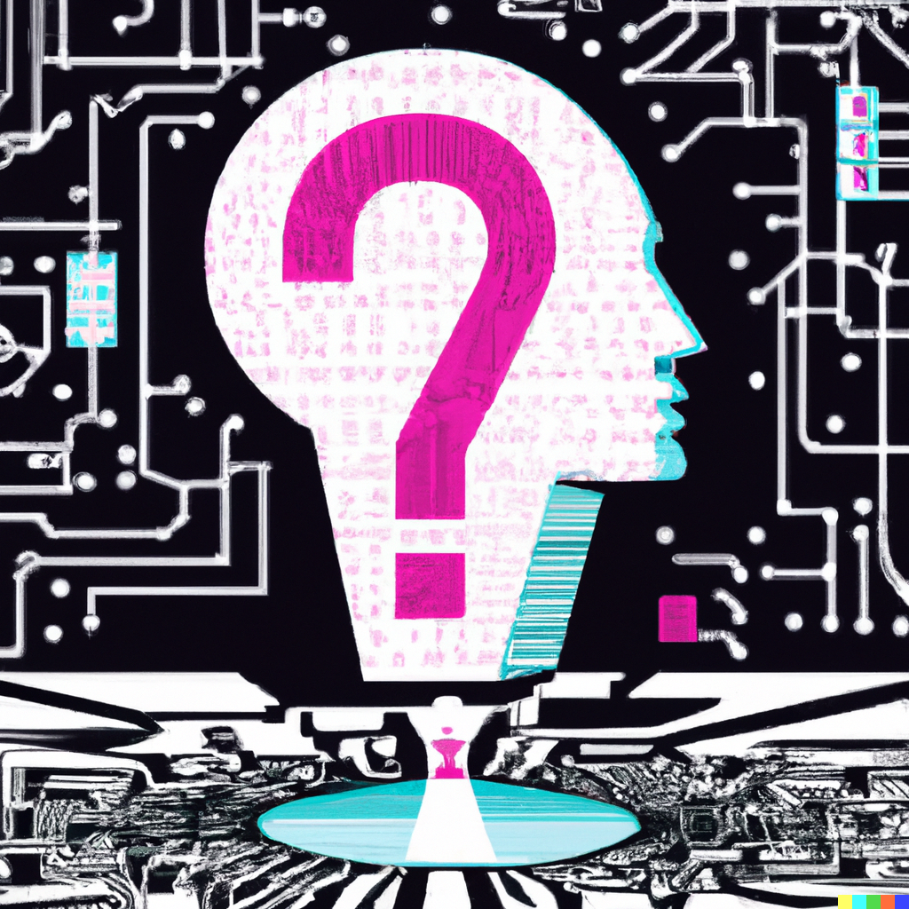

AI has the potential to revolutionize many aspects of our lives, from healthcare and transportation to education and entertainment. It can help us to process and analyze large amounts of data more efficiently, and it has the potential to automate many tasks, freeing up our time and resources to focus on more important things.
But AI has also the potential to negatively impact freely available, publicly available data such as blog posts, code samples, and open source projects. One reason for this is that it can make it easier for people to access this information without having to visit the original source.
Imagine that a blogger writes a series of blog posts and shares them freely with the world. These posts contain valuable information and code samples that are useful to many people. The blogger may offer this information freely because they hope to get some recognition and appreciation in return, such as through website visits and thank you messages.
The reduction in the amount of freely available data will not only have negative consequences for individuals and society as a whole, but it will also affect the ability of AIs to learn new content. Without sufficient quantities of freely available data to train on, AIs may not be able to learn as effectively and may be less capable in the tasks they are designed to perform.
However, if an AI system is trained on the data from these blog posts and is able to provide answers to similar questions or tasks just as efficiently as the original blog, then people may be more likely to use the AI system rather than visit the original blog. This could potentially reduce the number of visits to the blog, which could in turn reduce the motivation of the blogger to continue writing and sharing their content.
Is this vicious circle the end of creativity?
One potential solution could be to implement laws that forbid companies from training their AI systems with this type of data unless they have obtained written (or other) consent from the original poster. This could help to ensure that the creators of this type of content are fairly compensated and that their work is used ethically.
Additionally, legal bodies could explore whether privacy policies could be extended to include provisions related to the use of publicly available data by AI systems, so that a license of use must be explicitly acquired and its not implicitly assumed by the public nature of these data - something like the 'data protection by design and by default' of GDPR. This could help
Another approach could b eto modify existing open source licenses, such as the MIT license, Apache 2.0 license, and Creative Commons licenses, to accommodate the use of this type of data by AI systems. These licenses are designed to protect the rights of creators and ensure that their work is used ethically. By adapting them to address the use of publicly available data by AI systems, it may be possible to rapidly and effectively address this issue on a global scale.
Finally, it is also possible that a new type of license specifically designed for blog posts and other forms of publicly available data could be "invented" in order to address this issue. This license will not be meant to replace all others, but rather to extend them, giving the creators the possibility to choose weather to install it or not.
In summary, AI has the potential to negatively impact freely and publicly available data such as blog posts, code samples, and open source projects by reducing the incentive for people to create and share this type of content. This is because AI systems that are trained on this data may be able to provide answers to similar questions or tasks just as efficiently as the original source, which could potentially reduce the number of visits to the original source and the motivation of the creator to continue creating and sharing their content.
To address this issue, there are a few potential solutions that could be considered. One approach is to implement laws that forbid companies from training their AI systems with publicly available data unless they have obtained written consent from the original creators. Another possibility is to modify existing open source licenses, such as the MIT license and Creative Commons licenses, to include provisions related to the use of publicly available data by AI systems. Alternatively, a new type of license specifically designed for blog posts and other forms of publicly available data could be "invented" in order to address this issue.
And the plot twist? ChatGPT helped me write this article, but it wasn't a straightforward process. There was no one question or statement that could lead directly to it. Instead, I had to find the right questions and phrase them correctly, and even write paragraphs myself and ask ChatGPT to reformat them to match the rest of the article.
And the second plot twist? I asked ChatGPT to describe a potential feature image for this article, and then I fed that to Dall-E, which produced this feature image.
Here is what ChatGPT returned. The two suggestions were fed separately to Dall-E
"A potential feature image for this article could be a close-up photograph of a computer screen with an image of an AI system on it. The image could be overlaid with text that reads "The Dark Side of AI" in bold, eye-catching letters. The background could be a dark, moody color, such as deep blue or purple, to create a sense of foreboding and emphasize the "dark side" theme. Alternatively, the image could be a stylized illustration of an AI system, with the same text overlaid on top. The overall effect should be to draw the reader's attention and convey the theme of the article: the potential negative impact of AI on freely available, publicly available data."
Dall-E though didnt produce just one! With just a few clicks an endless stream of images appeared, since Dall-E was trained using the "freely and publicly available creations" of artists and photographers all around the world...
Not sure who I owe a thank you for this...